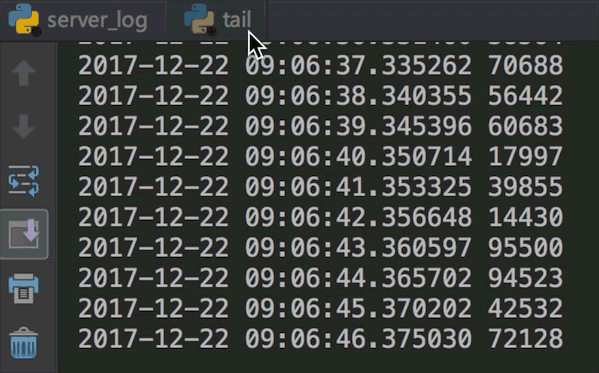
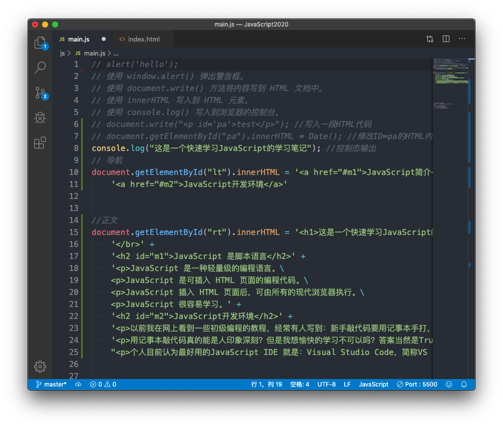
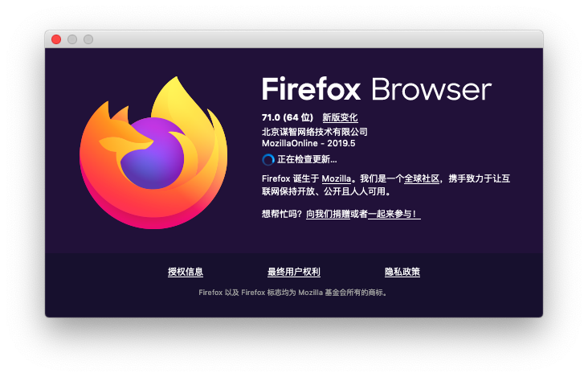

Python TK和Tkinter的GUI编程(10) filedialog 文件目录选择对话框
作者:J.sky 发布时间:2017-12-24 19:21:04 Tag:
Python GUI

python中有没有文件目录选择对话框？答案是肯定的，这个可以有。tkinter.filedialog这个模块就是负责选择文件及目录的。
tkinter.filedialog的测试
创建一个tk的窗口，包括一个文本框、按键及一个列表框，这些的创建都是很简单的，其中文本框及列表框中的关联数据我们采用tk中特有的绑定数据模式，具体可以查看代码。 测试代码中有一个是按键回调方法filedir，主要是用来弹出目录选择对话框的,filedialog中有很多比较用用的对话框：
'askdirectory',
'askopenfile',
'askopenfilename',
'askopenfilenames',
'askopenfiles',
'asksaveasfile',
'asksaveasfilename'
以上是通过print(dir(filedialog))打印查看到的，也可以通过源码查看到，通过单词字面应该大体上可以了解到这些函数弹出的对话框是干什么用的。
好了，具体测试源码如下：
'''
import tkinter.filedialog as filedialog
from tkinter import *
import os
def filedir():
print('按键已被点击')
v.set('')#清空文本框里内容
var.set((('')))
path = filedialog.askdirectory()
print(dir(filedialog))
if path :
v.set(path)
getdir(path)
def getdir(p):
#把目录中遍历出来的文件目录显示到列表框中
fp = os.listdir(p)
var.set(fp)
root = Tk()
root.title('文件目录选择对话框测试')
frame = Frame(root)
frame.pack(fill=X,side=TOP)
#加入一个文本框显示目录地址
v = StringVar()#绑定文本框的变量
ent = Entry(frame, width=50,textvariable = v).pack(fill=X,side=LEFT)
#加入一个按键，点击后弹出文件目录选择对话框
button = Button(frame, text='选择文件夹', command=filedir).pack(fill=X,side= LEFT)
#加入一个列表框，显示目录中的文件列表
listframe = Frame(root)
listframe.pack(fill=X,side=LEFT)
var = StringVar()#绑定listbox的列表值
var.set((''))
listbox = Listbox(listframe,width=60,listvariable = var).pack()
root.mainloop()
相关参考
本文源码下载：
Python生成器yield应用实例——监控日志
作者:J.sky 发布时间:2017-12-22 09:19:40 Tag:
Python基础
Python生成器yield是编写基于处理管道，流或数据流程序的一种极其强大的方式，在《Python参考手册》中有一则实例非常简单实用，略加修改，分享一下给大家。
需要分析
假设服务器有一个日志文件，每隔一秒都会更新日志的内容，日志每行中都有一组类似：2017-12-21 14:07:26.471691 99123数据被写入日志。
我们的目的是分析日志中的数字如果大于5000就要打印出来。
这样来看，我们需要一个程序负责模拟日志写入，另一个程序负责分析日志打印数据。
模拟日志写入
server_log.py:
import random
from datetime import *
import os
import time
def server_log():
# 生成模拟的日志数据
server_int = random.randint(1,99999)#生成需要的随机数
server_date = datetime.now()#获取当前系统时间
return str(server_date) + ' ' + str(server_int)#拼装日志字符串
while True:
#模拟系统写入日志
#打开日志文件并写入日志
with open(os.path.join(os.path.dirname(__file__),'server_log.log'),'at') as f :
s = server_log()
print(s)
f.write(s + '\n')
time.sleep(1)
上边的代码我已经添加了相关的注释，这样我们就有了一个日志文件，每秒会有一第记录插入到日志中。
利用生成器yield解析日志
生成器可以返回一个迭代的流式的对象，我们可以通过这种方式便捷的获得相关数据，而且代码也更清晰易懂
tail.py 代码如下：
import time
def tail(f):
f.seek(0,2)#移动到文件尾部。
while True:
line = f.readline()
if not line :
time.sleep(1)
continue
yield line
def grep(lines):
for l in lines:
k = int(l.split()[2])
if k >50000:
yield l
serverlog = tail(open('server_log.log'))
lines = grep(serverlog)
for line in lines:
print(line)
我们运行两个文件看下效果：

代码虽然简单，但值得细细品味，感受python的简约与强大吧。
本文源码下载：
这是一个快速学习JavaScript的学习笔记1
作者:J.sky 发布时间:2017-12-21 10:54:19 Tag:
JavaScript
JavaScript的代码写在哪里？
JavaScript变量名区分大小写。
;用来分隔语句，如果语句是一行的情况下，可以省略（有些情况下是不行的）。
HTML代码中嵌入 <script> </script>
外部引用：<script src="./js/main.js"></script>，放在<head>或<body>标签内。
语法结构
注释
```JavaScript // 单行注释
/ 这是一段注释 */
/ 这也是一段注释 / ```
数据类型
包括数值，字符串，布尔和对象(object)，还有两个特殊类型如下：
```JavaScript
null //空 undefined //未定义变量
```
JavaScript变量是无类型的，可以被赋予任何类型的值。
数字
``` 11 10090
0Xff//十六进制
3.14 1.11e23
```
算术运算
```
1+2 8-4 2*5 7/4 9%2 //取余数
i++ j--
```
文本字符串
``` JavaScript是一种面向对象的语言\ //（\）可以换行 // 也可以用 \n 换行。
var s = "hello world"+"你好 世界" s.length //字符串长度 ```
字符串可以用""或'',当在HTML中编写JavaScript的时候，可以使用其中的一种来确认引号的风格。用\来转义一些特殊字符。
布尔值
true flase
声明变量、常量
``` var a; var b ,c; var d=1,f=77,g='abc'; var kk;//如果变量没有指定初始值，它的初始值就是undefined
var glo = 44; //全局变量不可删除 glo1 = 22; //可以删除的全局变量。 delete glo1;//删除
//见 test.html test.js const NB998 = 'nb998'; document.querySelector('.aa').textContent = NB998;
```
eval()
出于JavaScript安全，不建议使用eval()
``` eval("4+8") // 12
```
三元运算符
?左边是布尔条件，右边是可选择的结果,用:分隔开。
``` var x = -8; alert(x > 0 ? x : -x) //求x的绝对值 结果为8
```
这是一个快速学习JavaScript的学习笔记0
作者:J.sky 发布时间:2017-12-20 10:53:19 Tag:
JavaScript
JavaScript 是脚本语言
JavaScript 是一种轻量级的编程语言. JavaScript 是可插入 HTML 页面的编程代码。 JavaScript 插入 HTML 页面后，可由所有的现代浏览器执行。 JavaScript 很容易学习。
JavaScript开发环境
以前我在网上看到一些初级编程的教程，经常有人写到：新手敲代码要用记事本手打，这样学习印象深刻！ 用记事本敲代码真的能是人印象深刻？但是我想愉快的学习不可以吗？答案当然是True了。 个人目前认为最好用的JavaScript IDE 就是：Visual Studio Code，简称VS code

推荐一些VS code的JS相关插件

插件的一些功能基本为：代码美化，HTML JavaScript代码片段及提示 其中Live Server 是一个实时简易web服务器，用来预览HTML和JS很方便了，浏览器推荐Firefox'

好了，有了这些好工具，我们可以开始愉快的学习JavaScript了！'